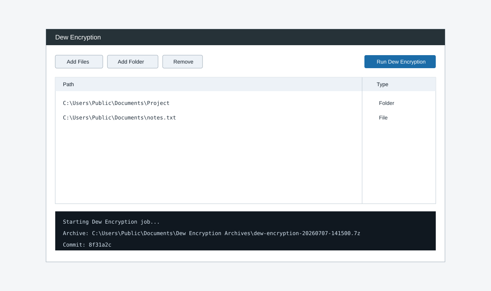
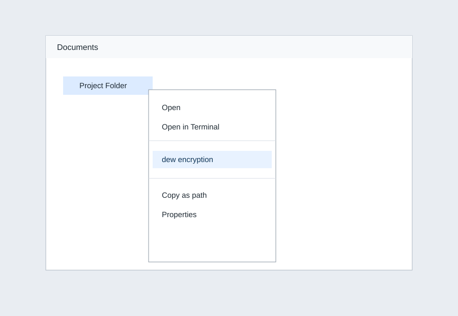

Dew Encryption Wiki
This page mirrors the GitHub Pages screenshots and explains the current GUI, Explorer, Nautilus, and container-history workflows.
GUI container manager
The Containers tab stores encrypted-container profiles, custom background/foreground/accent colors, font family and size, multiple open hooks, multiple close hooks, and Git-backed history snapshots for each container file.

Explorer and Nautilus quick actions
Windows Explorer actions include normal snapshots, folder history, history manager launch, VeraCrypt encryption/decryption, and quick-create encrypted containers. Linux installs matching Nautilus scripts where supported.

Container history and hooks
Use the GUI buttons or CLI commands to snapshot a container file and run configured open/close automations.
dew-encryption container-history C:\Path\To\Secrets.dew.hc --snapshot dew-encryption container-hooks open C:\Path\To\Secrets.dew.hc --mount-path X:\